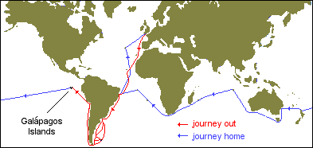
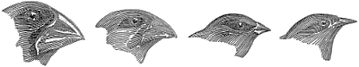

|
 One of the biggest and most important happenings that helped shape Charles Darwin's theories was the five year trip (1831-1836) aboard the H.M.S. Beagle. Riding on the ship as a naturalist, he collected specimens and observations as the ship traveled along the south sides of South America, Australia, and Africa. He started this voyage when he was 22 right after graduating, with a degree in theology, from Cambridge University. It was on this trip where he affirmed that evolution did occur. One of the most important places he visited was the Galapagos Islands, located in the Pacific Ocean near the west coast of South America. Because of it's remoteness, entire species could be found on different islands. Darwin found 13 species of finches (compared to the one he knew about in South America). He also dug up fossils alike to those of species now. Like the finches, he found many plant and animal variations similar to those in South America. When he got home, he went through all his notes, and came up with four interlacing theories: that there was evolution, that evolving was gradual, taking millions of years, the main thing that helped evolution was a process called natural selection, and the modern species we have around now evolved from from one organism using a process called specialization. After Charles Darwin's death, a Lady Hope said that he denied evolution on his deathbed and converted to Christianity, a story that was printed in the local newspaper. Charles Darwin's daughter revealed this story to be false, though, when she stated that she had been there and he had said no such thing. |